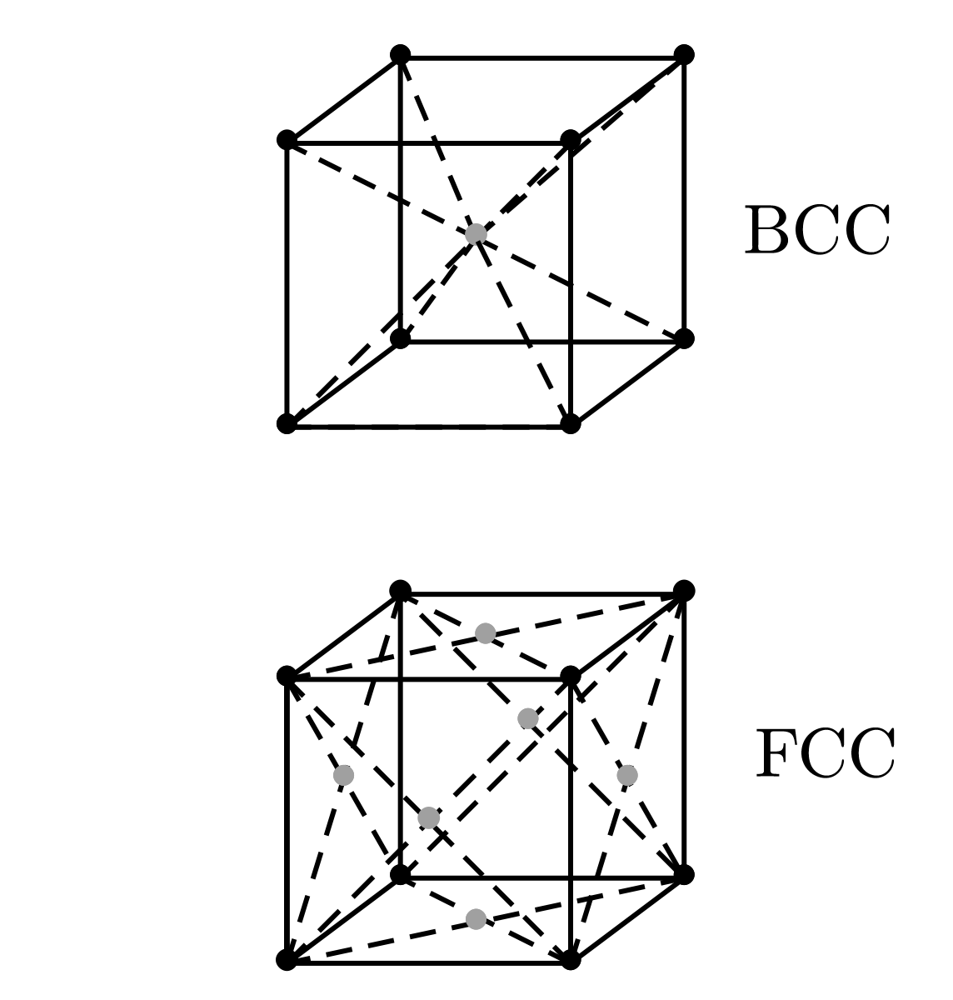

|
When the atoms of matter are not moving around very much, they get stuck together and arrange themselves in a configuration with as low an energy as possible. Indeed, if atoms in a certain place exhibit order or a pattern which seems to be of low energy, then the atoms somewhere else will likely make the same arrangement. For these reasons, we have in a solid material, a repetitive pattern of atoms.
The pattern of atoms in a crystal can be found oout experimentally using x-ray diffraction, and the presice pattern has been found out experimentally for most simple crystals and some complicated ones.
The internal pattern of a crytal shows up in many ways.
First, the binding strength of atoms in certain directions is usually stronger than in other directions. This means that there are certain planes through the crystal where it is more easily broken than others. These planes are called cleavage planes.
Second, the internal structure of a crystal often appears at the surface of the 3D object because of the way the crystal was formed.
The mechanical properties of crystals clearly depend on the kind of chemical bindings between the atoms of the crystal.
Try to imagine the natural formation of crystals in the earth. In the earth's sruface, there is a big mixture of all kinds of atoms. They are being continually churned about by volcanic action, by wind, and by water - continually being moved about and mixed.
Yet, by some trick of nature, silicon atoms gradually begin to find each other, and to find oxygen atoms, to make silica. One atom at a time is added to the others to build up a crystal - the mixture essentially gets unmixed. And, somewhere nearby, sodium and chroline atoms are finding each other and building up crystals of salt!
How does this all happen? How is it the case that once a crystal is started that it permits only a particular type of atom to join it? This happens because the whole system is working towards a lowest possible energy (as a result of 2nd Law of Thermodynamics). A growing crystal will accept a new atom if it is going to make the energy as low as possible. But how does it know that a silicon - or oxygen - atom at some particular spot is going to result in the lowest possible energy? Well, it does it by trial and error!
In the liquid mixture, all of the atoms are in perpetual motion. Each atom bounces against its neighbours about times every second. If it hits against the right spot of a growing crystal, it has a somewhat smaller chance of jumping off again if the energy is low (why is that?). By continually testing over periods of millions of years at a rate of tests per second, the atoms gradually build up at places where they find their lowest energy. Eventually, the grow into big crystals. (Does this explain growth at smaller timescales?)
The arrangement of atoms in a crystal, called the crystal lattice can take on many geometric forms. The simplest which characterise most metals are cubic structures, the body-centred cubic (BCC) and the face-centred cubic (FCC) lattices, see figure on the right. To make the drawing clearer, only the “centres” of the atoms are shown, in reality the atoms are more like spheres in contact with one another. The dark and light spheres in the drawing may in general be considered as different kinds of atoms, or of the same kind. For instance, iron has a BCC lattice at low temperatures and FCC lattice at high temperatures. The physical properties are quire different in the two crystalline forms. |
 |
How do such lattice forms come about? Infact, there are many reasons, but the main reasons are due to the close-packing of such lattice configurations and also partly due to the slight angular dependent of the interatomic forces (or, in the case of meatals, on the energy of the electron pool).
Crystals in two dimensions can have many symmetries, indeed, besides the identity symmetry operator, the possible symmetry operators are mirror, rotation and glide. Infact, rotational symmetry can be broken up into 1, 2, 3, 4 and 6 fold symmetry, and that is all. Note that 5 fold symmetry does not exist, neither does 7+ fold symmetry. In fact, one can also notice that various combinations of symmetries can yield either previously defined symmetries, or new ones altogether. Indeed, there are a total of 17 different types of combinations of symmetries that can be formed in two dimensions.
Similarly to two dimensions, in three dimensions, there are a total of 230 types of unique symmetry operations. For some purposes, these 230 operations can be grouped into 7 classes: triclinic, trigonal, monoclinic, hexagonal, orthorhombic, tetragonal and cubic, ordered in ascending order of the amount of symmetries possible with each class.
The point of all this discussion about symmetries is that the internal symmetries of the crystals show up - sometimes in subtle ways - in the macroscopic physical properties of the crystal. For instance, the crystal will, in general, have a tensor electric polarisability. If we describe the tensor in terms of the ellipsoid of polarisation, we should expect that some of the crystals symmetries should also show up in the ellipsoid. For example, a cubic crystal is symmetric with respect to a rotation about any one of its three orthogonal directions. Clearly, the only ellipsoid with this property is the sphere. Thus, a cubic crystal must be an isotropic dielectric.
We have said that metals usually have simple cubic crystal structure; we now want to discuss their mechanical properties - which depend on its structure.
Suppose we loook at two layers of a crystal subjected to a shear force, as shown on the right. You might first think that the whole layer would resist motion until the force was big enough to push the whole upper layer “over the hump” so that it is shiften one notch to the left. Although slipping does occur along a plane, it doesn't happen that way, and if it did, you would calculate that the material is much stronger than it actually is! What actually happens is that atoms move one at a time; first atom on the left makes a jump, then the next and so on. In effect, it is the vacant space between the atoms quickly travels to the right, with the net result that the whole second layer has moved over one atomic spacing. |
|
The slipping happens this was because it takes much less energy to lift one atom over the hump at a time than it does to lift the whole row (think of the usage of pulleys). Once the force is enough to start the process, it goes the rest of the way very fast!
It turns out that in a real crystal, slipping will occur repeatedly at one plane, then will stop there and start at some other plane. The details of why it starts and stops are quite mysterious (Can two layers not slip at the same time?). It is also in fact very strange that successive regions of slip are often fairly evenly spaced.
By moving freely, we mean that dislocations require little energy to move as long as the rest of the lattice is perfect. But, if dislocations encounted some orther defect/imperfect (such as a grain boundary), dislocations can get “stuck”. If it takes a lot of energy to overcome some imperfection, dislocations will be stopped. This is precisely the mechanism that gives strength to imperfect metal crystals.Small concentrations of impurity in a crystal may cause enough imperfections to effectively immobilise the dislocations. Alternatively, metal's can also be work hardened (bent or hit), which through deformations can introduce imperfections into the lattice to harden materials. This can also be used alongside annealing to create hard metals, and is indeed the method used to made hard swords in smitheries.
The dislocation described above described an edge/slip dislocation, although another form of dislocation, known as the skew dislocation exists, which plays an important part in crystal growth.
One of the great puzzles for a long time was how crystals can possibly grow. We have described above how it is that each atom might, by repeated testing, determine whether it was better to be in the crystal or not. But that means that each atom must find a place of low energy. However, an atom put on a new surface is only bound by one or two bonds from below, and doesn't have the same energy it would have if it were placed in a corner, where it would have atoms on up to three sides (see figure on the right). Suppose, we have a growing crystal as a stack of blocks as on the right. If we try to place a new block at say position , then the block will have only one of six neighbours it should ultimately get. With so many bonds lacking, its energy is not very low. It would be better off at position , where it alread has half of its quota of bonds, which is indeed what crystals end up doing. |
|
But what happens when the line on which lies is finished? To start a new line, an atom must come to rest with only two sides attached, and that is again now very likely. Even if it did, what would happen when the whole plane is finished? One answer is that the crystal prefers to grow at a dislocation, for instance a screw dislocation. Here, as blocks are added to the crytal, there will always be a space where there are tree available bonds. The crystal therefore prefers to grow with a dislocation built in.
We cannot see what goes on with the individual atoms in a crystal (maybe now we can?), and also, there are many complicated phenomena that are not easy to treat quantitatively. Sir Lawrence Braff and J. F. Nye have devised a scheme for making a model of a metallic crystal which shows in a stricking way many of the phenomena that are believed to occur in a real metal, and this is shown in their article A dymical model of a crystal structure (1947).
Leighton, R. B., Sands, M., Feynman, R. P. (2011). The Feynman Lectures on Physics, Vol. III: The New Millennium Edition: Quantum Mechanics. United Kingdom: Basic Books.